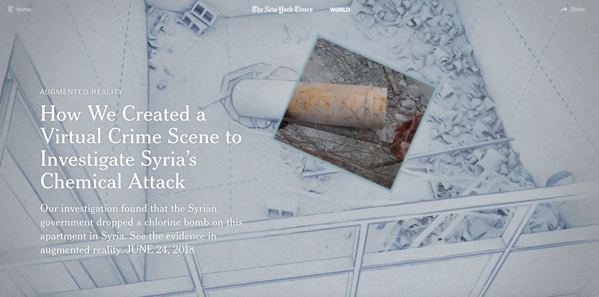
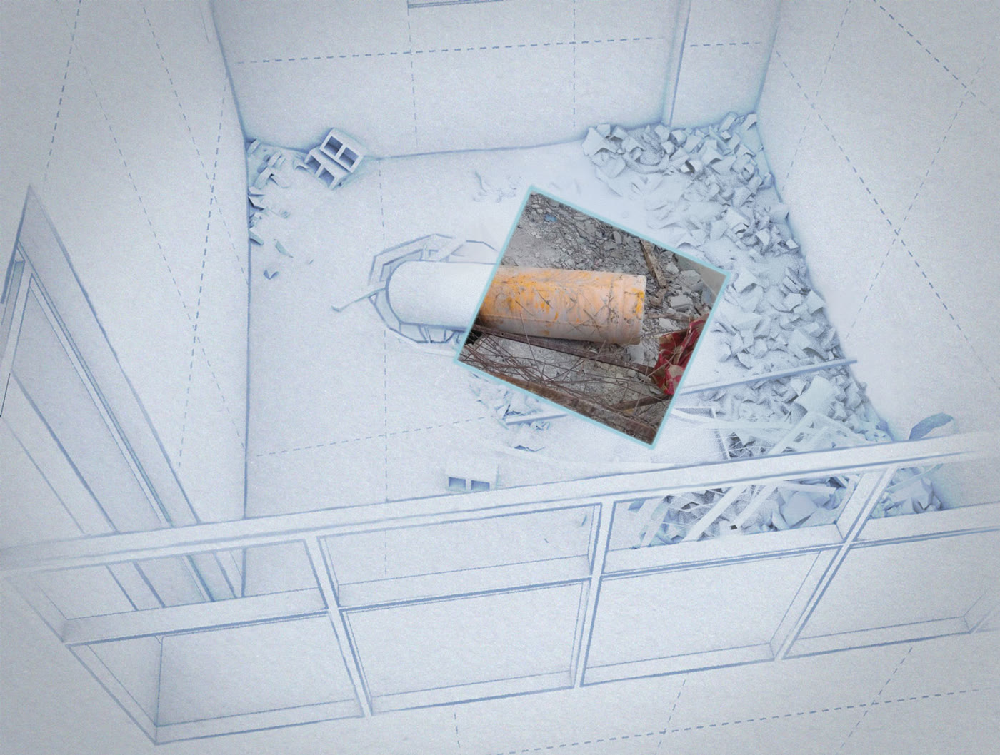
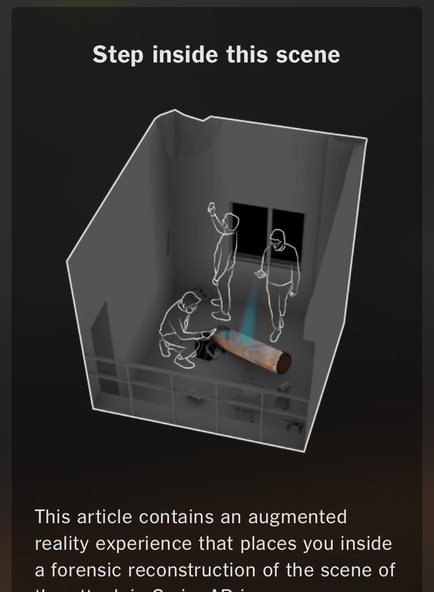

Editorial graphics · The New York Times
Inside a Virtual Crime Scene
An augmented-reality reconstruction developed for a visual investigation of the 2018 chemical attack in Douma, Syria.

Reconstructing the scene
The project rebuilt an apartment in Douma as a virtual crime scene, helping readers examine the physical evidence behind the Times investigation. I worked on the project during my 2018 graphics internship.
Read the original project ↗
